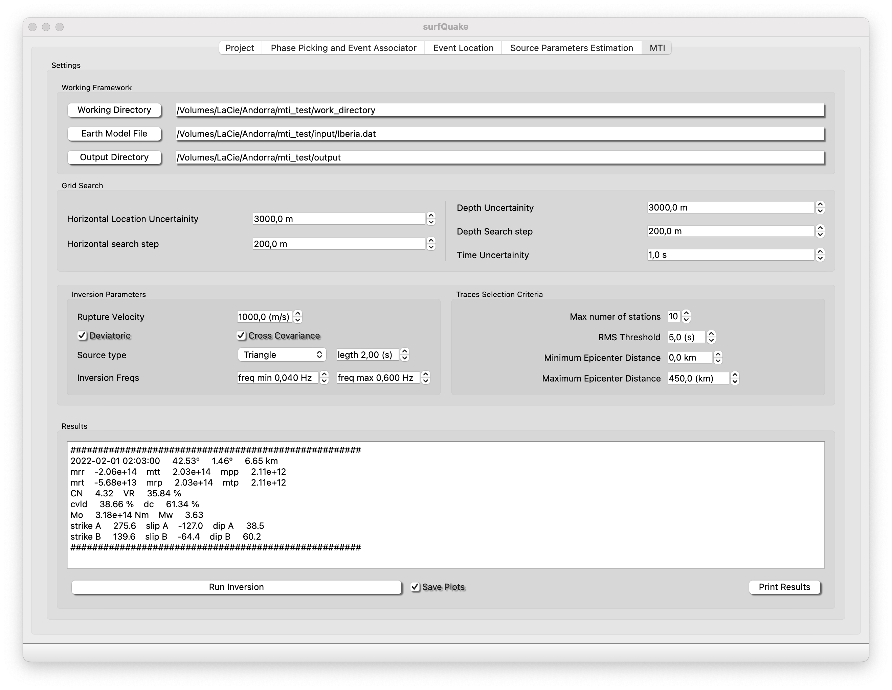

Automatic Moment Tensor Inversion
The events foocal mechanism is estimated using a optimized version of Bayesian Isola (Vackâr et al., 2017). The MTI is run automatically over a set of events. The events can be selected quering the database through the GUI, giving a folder path with mti_config.ini files or even crating obsject for each event and the running the inversion from th cor library.
MTI GUI

-
Working Framework:
-
Working Dirctory (no required): Folder where Green functions a temporal files will be saved.
-
Output Directory: Rooth path to the folder where output from event inversions will be saved.
-
Earth Model File: File path to he earth model. An example as follows:
-
Crustal model IBERIA
number of layers
7
Parameters of the layers
depth of layer top(km) Vp(km/s) Vs(km/s) Rho(g/cm**3) Qp Qs
0.0 6.10 3.490 2.920 300 300
11.0 6.40 3.660 2.980 300 300
24.0 6.90 3.940 3.080 300 300
31.0 8.00 4.570 3.300 300 300
45.6 8.04 4.474 3.308 300 300
56.2 8.04 4.478 3.309 300 300
66.9 8.04 4.481 3.309 300 300
*************************************************************************
-
Grid search: Defines a geographic grid centered in the estimated hypocenter where surfquake will proceed with the search of the best MTI.
-
Horizontal Location Uncertainity: Maximum horizontal range of the search.
-
Horizontal search step: Horizontal resolution of the grid search.
-
Depth Uncertainty: Maximum vertical range of the search.
-
Depth Search step: Vertical resolution of the grid search.
-
Time Uncertainity: Time shift around the event origin time.
-
-
Inversion Parameters: Defines parameters realtd to the source and the inversion process.
- Traces Selection Criteria: Defin the criteria to include or not seismograms to your inversion
Now, that you have parametrized your inversion follow the steps:
- Inside Project: Load your project and load your Metadata.
- Inside The DataBase dedicated GUI.
- Fill your DataBase loading that files from the folder where you have the location files.
- Not required but very recommended populate your DataBase with the information from the output of Source. This will give the database information about Magnitudes and will facilitate the MTI.
- Make a Query to filter your Database
- Without closing DataBase GUI, press Run Inversion.
- Track the evolution of your inversions in the output dirctory, finally press print Results.
- Populate your dataBase with the information from the output of MTIs.
MTI Config File
In the following sections CLI and Core library the user can use mti_config.ini files to define each event where surfquake will carry out the MTIs. You can storage a single event per file. So, place all files inside the same folder. Please find here an example of mti_config.ini file (the name of the .ini file doen't matter just extension .ini).
[ORIGIN]
ORIGIN_DATE = 21/08/2018 00:28:57.000
LATITUDE = 42.7059
LONGITUDE= -7.6974
DEPTH_KM = 11.0
MAGNITUDE = 3.5
[STATIONS_AND_CHANNELS]
# add the station name follow by channels split by a comma , and use .+ for all channels
ELOB = HHZ, HHN, HHE
EPON = .+
EMAZ = .+
[MTI_PARAMETERS]
EARTH_MODEL_FILE = /earth_models/Iberia.dat
LOCATION_UNC = 3000
TIME_UNC = 0.5
DEVIATORIC = True
DEPTH_UNC = 3000
COVARIANCE = True
RUPTURE_VELOCITY = 2500
SOURCE_TYPE = Triangle
MIN_DIST = 50
MAX_DIST = 500
SOURCE_DURATION= 2
[SIGNAL_PROCESSING]
REMOVE_RESPONSE = True
MAX_FREQ = 0.08
MIN_FREQ = 0.04
RMS_THRESH = 5.0
MTI from CLI
Usage
surfquake mti -i [inventory_file_path] -p [path_to_project] -c [path to mti_config_file.ini]
-o [output_path] -s [if save plots]
Interactive help
Run MTI from CLI
>> surfquake mti -i /mti_run_inversion_resources/inv_surfquakecore.xml -p /project/surfquake_project_mti.pkl -o /test_mti -c /surfquake_test/mti_configs -s
MTI from Library
Classes
class BayesianIsolaCore:
def __init__(self, project: SurfProject, inventory_file: str,
output_directory: str, save_plots=False):
"""
:param project: SurfProject object
:param inventory_file: File to the metadata file
:param output_directory: Root path to the output directory where inversion results will be saved
:param save_plots: if figures summarizing the results for each inversion are desired
"""
Methods
# instance method
def run_inversion(self, mti_config: Union[str, MomentTensorInversionConfig], **kwargs):
"""
This method should be to loop over config files and run the inversion.
Previously it is needed to load the project and metadata.
Args:
mti_config: Either a directory of .ini files, a .ini file or an instance of MomentTensorInversionConfig
**kwargs:
Returns:
"""
def read_isola_result(file: str) -> MomentTensorResult:
"""
Reads the ISOLA-ObsPy output inversion.json file.
:param file: The location of inversion.json from isola.
:return: Dict
"""
Example using library
Alternatively, if you want you would prefer crat moment tensor config objects rather than point to a folder with .ini files. Then, crate objects like this:
mti_configs = [] # Create an empty list to storage mti configurations
date_str = "28/02/2022 02:07:59.433"
origin_date = datetime.strptime(date_str, '%d/%m/%Y %H:%M:%S.%f')
# still implementing test
mti_config1 = MomentTensorInversionConfig(
origin_date=origin_date,
latitude=42.5414,
longitude=1.4505,
depth_km=5.75,
magnitude=3.0,
stations=[StationConfig(name="TEST1", channels=["NNH", "NNZ", "NNE"]),
StationConfig(name="TEST2", channels=["NNH", "NNZ", "NNE"])],
inversion_parameters=InversionParameters(
earth_model_file="earthmodel/Iberia.txt",
location_unc=0.7,
time_unc=.2,
depth_unc=3.,
source_duration=2.0,
rupture_velocity=2500.,
min_dist=10.,
max_dist=300.,
source_type='PointSource'
),
)
mti_cnfig2 = MomentTensorInversionConfig(....)
........
mti_configs = [mti_config1, mti_config2 .... ]
Then